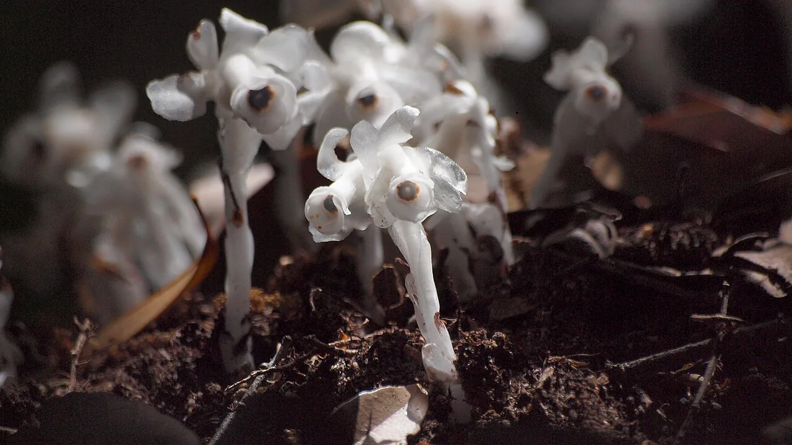
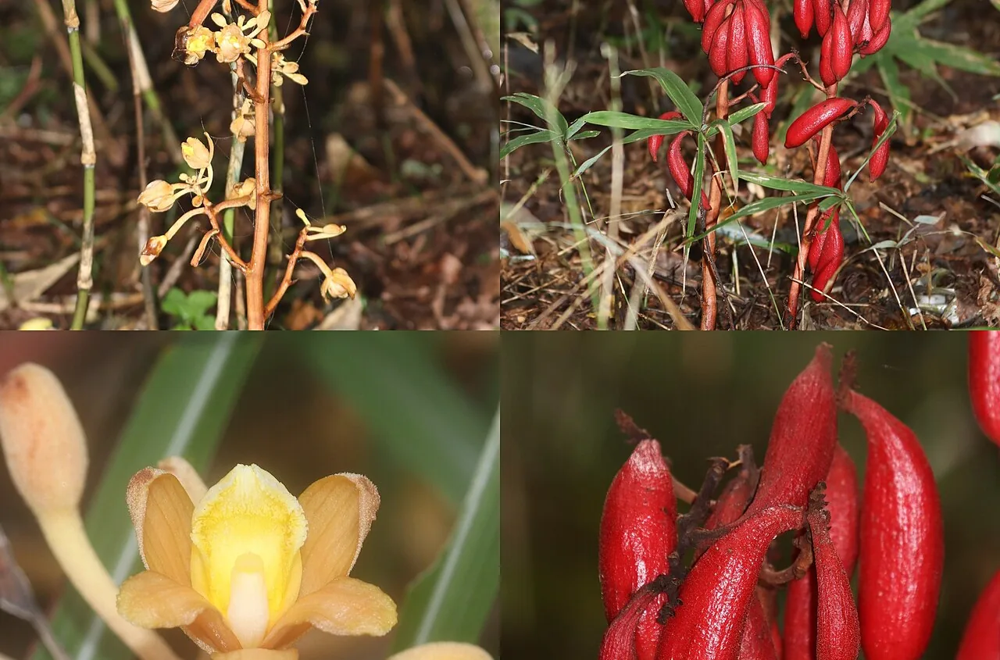

Japan's ghost plants: the flowers that gave up photosynthesis
On a dim, damp Japanese forest floor in June you may find something that looks wrong: a cluster of waxy, translucent white stalks pushing up through the leaf litter, each ending in a downturned flower with a dark centre like an eye. It is not a fungus. It is a flowering plant — ギンリョウソウ (ginryōsō, "silver dragon plant"), also called yūreitake, the ghost mushroom. It has no chlorophyll and does no photosynthesis at all. It obtains its carbon by tapping into the fungal network that connects the trees around it, and giving nothing back. Japan has roughly fifty such species, and its forests hold the highest genus-level diversity of one whole family of them found anywhere on Earth. This is a naturalist's guide to what they are, why one of them came back from extinction, and why you cannot take one home.

Why "saprophyte" is the wrong word
Older books call these plants saprophytes — organisms living on decaying matter. Japanese does the same: 腐生植物, fusei shokubutsu. The term is now considered wrong, and the reason is simple. Decomposing dead plant material is chemically demanding work, and flowering plants cannot do it. They have no decay machinery. A plant sitting in leaf litter cannot digest the leaf litter.
What these plants actually do is exploit the mycorrhizal relationship — the partnership between fungi and tree roots that underpins most forests. Trees photosynthesise and pass sugars to their fungal partners; the fungi pass water and minerals back. A mycoheterotroph (菌従属栄養植物, kin-jūzoku-eiyō shokubutsu) plugs into that fungal network and draws carbon out of it without contributing anything. It is not parasitising the tree directly. It is robbing the tree's business partner.
"No plant is really a saprophyte" turns out to be too neat. Suetsugu Kenji and colleagues tested it directly, publishing in New Phytologist in 2020: they measured radiocarbon in ten Japanese mycoheterotrophs, using the spike in atmospheric 14C left by twentieth-century nuclear testing as a clock. Six species held carbon fixed recently — consistent with the living-tree route. But four, including Gastrodia elata, held carbon fixed decades earlier. Those species are connected to wood-decay fungi feeding on dead trunks. So the carbon really is coming from dead wood — just with a fungus doing the decomposition in between. Indirectly saprophytic species exist. The old word was wrong about the mechanism, not always about the source.
Where the carbon actually comes from
| Route | Chain | Japanese examples |
|---|---|---|
| Living tree route | Tree photosynthesises → ectomycorrhizal fungus → plant | Ginryōsō and most others; carbon is recently fixed |
| Dead wood route | Dead trunk → wood-decay fungus → plant | Gastrodia elata and three others; carbon is decades old |
Which fungus a plant robs is usually very specific, and that specificity is the whole conservation problem. Ginryōsō and its relatives form a specialised structure called a monotropoid mycorrhiza with fungi in the Russulaceae — the genera Russula and Lactarius, familiar to mushroom foragers. The orchid Cyrtosia septentrionalis partners with Armillaria, the honey fungus. Members of Thismiaceae, Triuridaceae, Burmanniaceae and Petrosaviaceae depend instead on arbuscular mycorrhizal fungi.
Follow the chain and you see why these plants are such demanding residents. To have the plant you need its particular fungus; to have that fungus you usually need particular mature trees. Three organisms have to be present, in the right relationship, in the same patch of forest.
The ghost plant, and the species hiding inside it
Ginryōsō, Monotropastrum humile, is in the heather family, Ericaceae. It stands about 15 cm, one flower per stem, the whole plant translucent white. It occurs throughout Japan and beyond — the Kurils, Sakhalin, Korea, China, Taiwan, Indochina, the Himalaya — in damp, humus-rich forest floor under conifers or broadleaves. Japanese sources give the flowering season as April to August; some field guides narrow it to May to August. Its fruit is a berry, which matters below.
For a long time Monotropastrum was treated as a single-species genus. Then in a paper by Suetsugu and colleagues in the Journal of Plant Research — published online in November 2022, in the 2023 volume — a second species was separated out: Monotropastrum kirishimense, kirishima-ginryōsō. It had been dismissed as a colour variant.
What makes the split convincing is that four independent lines of evidence agree. Its flowers are rosy pink rather than white. Its above-ground part stays under 5 cm while its underground part exceeds 10 cm. It flowers roughly 40 days later than M. humile. And genome-wide SNP data separate the two cleanly. The strongest evidence is ecological: across populations more than 700 km apart, M. kirishimense was found specialised on a single Russula lineage in subsection Virescentinae — a group never detected in more than ninety samples from fifteen populations of M. humile. Two plants that look nearly identical are eating different fungi.
The orchid that hired a bird

Tsuchiakebi, Cyrtosia septentrionalis, is the opposite of subtle. It is a leafless orchid that reaches a metre tall, entirely yellow-brown, carrying thick cream flowers about 3 cm across in summer. In autumn the whole thing turns scarlet as it produces fleshy fruits up to 10 cm long. Its fungal partner is Armillaria.
Orchid seeds are famously dust-like and wind-dispersed. This one is not, and proving that was a genuine discovery. In Nature Plants in 2015, Suetsugu, Kawakita and Kato showed that the red fruits are eaten by the brown-eared bulbul (Hypsipetes amaurotis), which passes the seeds intact — the first demonstration of animal-mediated seed dispersal anywhere in the orchid family. Later work added the masked palm civet as a disperser.
The logic is the same one that governs the whole group. Wind dispersal needs wind, and a closed forest floor in summer has almost none. Plants that live down there have had to find something else that moves.
The fairy lantern that came back
The best story in Japanese botany of the last decade belongs to a plant about one centimetre tall.
| When | What happened |
|---|---|
| 10 June 1992 | A single individual collected in Nishi ward, Kobe. The specimen goes to the Museum of Nature and Human Activities, Hyōgo |
| 1999 | The site is destroyed by development. Surveys through the 1990s find nothing more |
| 2010 | Hyōgo Prefecture formally assesses it as extinct |
| 2018 | Re-examination of the specimen shows it was an undescribed species. Described in Phytotaxa as Thismia kobensis — a species known only from one dead plant, from a place that no longer exists |
| 2023 | Twenty individuals found in a hinoki cypress plantation in Sanda, about 30 km from the original site. Published in Phytotaxa 585(2), 28 February 2023 |
Thismiaceae are called fairy lanterns in English — tiny, almost entirely subterranean plants that briefly push a bizarre six-lobed flower above the litter. T. kobensis is white to pale yellow with an orange top, with roots about a millimetre thick, flowering around May.
The rediscovery mattered for a second reason. Examining the flower's internal structure — it lacks nectaries — placed its closest known relative as Thismia americana, recorded near Chicago between 1912 and 1916 and extinct ever since, a plant whose isolation had puzzled botanists for a century. A Japan–North America link is most plausibly explained by movement across the Bering land bridge.
Then in 2024 the family produced something rarer still. Relictithismia kimotsukiensis — mujina-no-shokudai — was described from the Kimotsuki mountains in Kagoshima, published in the Journal of Plant Research in February 2024. It is a new genus, the first plant genus described from Japan and still accepted as such in roughly a century; the previous case was 1930. It stands 5–16 mm when flowering and frequently does not emerge above the ground surface even then. Fewer than five individuals are known, and the authors assess it as Critically Endangered. It was found by Nakamura Yasunori, an amateur botanist, who came across a single plant on 3 June 2022.
Suetsugu and colleagues noted in 2024 that Japan holds more than twenty species of arbuscular-mycorrhizal mycoheterotrophs across four families, and the highest genus-level diversity of Thismiaceae in the world — three genera, Oxygyne, Thismia and Relictithismia. A 2016 Kobe University release put the total of Japanese mycoheterotrophs at about fifty species across nine families. For a country the size of California, that is remarkable, and it is essentially unreported in English outside the primary literature.
Dust seeds, cockroaches and woodlice
Giving up photosynthesis has consequences that run through the whole life cycle. These plants produce dust seeds: microscopic, with an undifferentiated globular embryo and little or no endosperm. A seed that small carries no fuel, so it cannot germinate on its own. It has to be found and infected by the right fungus first — the fungus feeds the seedling before there is a seedling. A single fruit may hold tens of thousands to millions of them.
Because wind is useless under a summer canopy, dispersal has been handed to whatever walks past. The list assembled over the last decade is genuinely strange:
- Cockroaches. The forest cockroach Blattella nipponica eats ginryōsō fruit and disperses the seeds — reported by Uehara and Sugiura in the Botanical Journal of the Linnean Society in 2017.
- Camel crickets. Suetsugu showed in New Phytologist in 2018 that camel crickets disperse seeds in three separate lineages independently.
- Earwigs and woodlice. Suetsugu reported the woodlouse Porcellio scaber as a disperser in 2024 — described as the smallest known animal to disperse seeds through its gut.
Pollination is equally unorthodox. Some species have stopped opening their flowers altogether: Gastrodia kuroshimensis, described in 2016, is completely cleistogamous and self-pollinates without ever opening. And in Ecology in 2023 Suetsugu documented nursery pollination in Gastrodia foetida — its wilting flowers become nurseries for the larvae of the fungus-feeding fly Drosophila bizonata, which pollinates in exchange. It was the first case reported in the orchid family.
Finding them, and why you can't keep them
Ginryōsō is the realistic target. It occurs across the whole country and is the one you might actually meet. Look in the rainy season, roughly June, on shaded forest floor with deep damp humus — mature conifer or broadleaf forest, or the wetter side of a slope. Do not assume you need pristine wilderness: the Thismia kobensis rediscovery happened in a commercial cypress plantation. For autumn, its relative Monotropa uniflora (aki-no-ginryōsō) flowers August to October. Tsuchiakebi is easiest to spot in autumn, when a metre-tall stem covered in scarlet fruit is hard to miss.
Thismiaceae are, realistically, not a target for a visitor. They flower briefly, and several barely break the surface of the litter at all.
People try to transplant ginryōsō, and it always fails. The plant needs its specific mycorrhizal fungus, and the fungus needs its host trees. Lift the plant and you have removed one member of a three-way relationship from the only place that relationship exists. It cannot be potted, and it cannot be cultivated. Photograph it and leave it; the underground parts persist and may emerge again next year, provided the forest and its fungi are still there. Also note that Japanese nature reserves and shrine forests, where these plants often are, generally prohibit removing any plant material.
On legal protection, be precise: most of these species are not individually protected at national level. Of Japan's nationally designated rare species list, the only mycoheterotroph we could confirm is Sciaphila yakushimensis, listed in 2018. Many others appear on prefectural red lists — and the practical protection for all of them is the forest itself.
The Japanese you'll actually use
| Japanese | Reading | Meaning |
|---|---|---|
| ギンリョウソウ | ginryōsō | "silver dragon plant" — the ghost plant |
| ユウレイタケ | yūreitake | "ghost mushroom" — its other name, though it is not a fungus |
| 菌従属栄養植物 | kin-jūzoku-eiyō shokubutsu | mycoheterotrophic plant |
| 腐生植物 | fusei shokubutsu | "saprophyte" — the older term, now avoided |
| 菌根 | kinkon | mycorrhiza — the fungus-root partnership being robbed |
| 葉緑素 | yōryokuso | chlorophyll — what these plants lack |
| 林床 | rinshō | forest floor — where to look |
| 絶滅 | zetsumetsu | extinction — as declared, wrongly, in 2010 |
| 新種 | shinshu | new species |
Want these to stick? The free JLPT battle quiz drills nature vocabulary like this with spaced repetition.
Try the land firefly that flashes gold after midnight →, why fireflies glow →, eyespots and deimatic displays →, the science of animal colour → and wildlife watching region by region →.
Common questions
Q. What is a mycoheterotrophic plant?
A. A flowering plant that has given up photosynthesis, wholly or partly, and gets its carbon from mycorrhizal fungi instead. It taps the fungal network that normally trades sugars with tree roots, and returns nothing — so it exploits the fungus rather than the tree directly.
Q. Are they the same as saprophytes?
A. No, and the old term is misleading. Plants cannot decompose dead material themselves. That said, radiocarbon work published by Suetsugu and colleagues in New Phytologist in 2020 found that four of ten Japanese species tested held carbon fixed decades earlier, via fungi decaying dead wood — so some species really do live on dead wood, just with a fungus doing the digestion.
Q. What is ginryōsō?
A. Monotropastrum humile, a translucent white plant about 15 cm tall in the heather family, found across Japan on damp shaded forest floor. It depends on fungi in the Russulaceae. Japanese sources give its flowering period as April to August, with some field guides narrowing this to May to August.
Q. Can I grow one at home?
A. No. It requires a specific mycorrhizal fungus, which in turn requires its host trees. Removing the plant separates it from the only place that three-way relationship exists, and it dies. These species cannot be cultivated.
Q. What is the fairy lantern that was rediscovered?
A. Thismia kobensis, collected once in Kobe in 1992, its habitat destroyed in 1999 and assessed as extinct by Hyōgo Prefecture in 2010. It was described as a new species in 2018 from that single specimen, then found alive in 2023 in a cypress plantation in Sanda, about 30 km away.
Q. Why did that rediscovery matter scientifically?
A. Its flower structure showed its closest relative to be Thismia americana, recorded near Chicago from 1912 to 1916 and extinct since — a long-standing puzzle. The Japan–North America connection is most plausibly explained by dispersal across the Bering land bridge.
Q. Does Japan have unusually many of these plants?
A. Yes. A 2016 Kobe University figure puts the total at about fifty species across nine families, and a 2024 paper records Japan as holding the highest genus-level diversity of the family Thismiaceae in the world, with three genera.
Q. How do their seeds get around?
A. Not by wind. Their dust seeds are dispersed by animals walking the forest floor: forest cockroaches (Uehara and Sugiura, 2017), camel crickets (Suetsugu, 2018), and even the woodlouse Porcellio scaber (Suetsugu, 2024). The orchid Cyrtosia septentrionalis instead produces red fleshy fruit eaten by the brown-eared bulbul — the first animal seed dispersal proven in the orchid family, published in Nature Plants in 2015.
Written by naturalists. This article follows the primary literature: Suetsugu, Kawakita & Kato, Nature Plants 1: 15052 (2015) for bird dispersal in Cyrtosia septentrionalis; Uehara & Sugiura, Botanical Journal of the Linnean Society 185: 113–118 (2017) for cockroach dispersal in ginryōsō — a finding often misattributed, and not Suetsugu's paper; Suetsugu, New Phytologist (2018) for camel crickets and Plants, People, Planet (2024) for woodlice; Suetsugu, Matsubayashi & Tayasu, New Phytologist (2020) for the radiocarbon work; Suetsugu et al., Journal of Plant Research 136: 3–18 (online 2022) for Monotropastrum kirishimense; Suetsugu, Yamana & Okada, Phytotaxa 585(2) (2023) for the Thismia kobensis rediscovery; Suetsugu et al., Journal of Plant Research (2024) for Relictithismia kimotsukiensis and the Thismiaceae diversity figure; and Suetsugu, Ecology (2023) for nursery pollination in Gastrodia foetida. Species totals vary between sources depending on whether partial mycoheterotrophs are counted — published world figures range from roughly 500 to about 880 species, and we have given Japan's total as the approximately fifty reported by Kobe University in 2016 rather than implying a current audited count. The rediscovery of T. kobensis is dated here to its publication in 2023; some sources date the field find to 2021. Thismia was placed in Burmanniaceae in the 2018 description and in a separate family Thismiaceae in the more recent papers, which we follow. Nature is full of exceptions; that is what makes it worth studying.